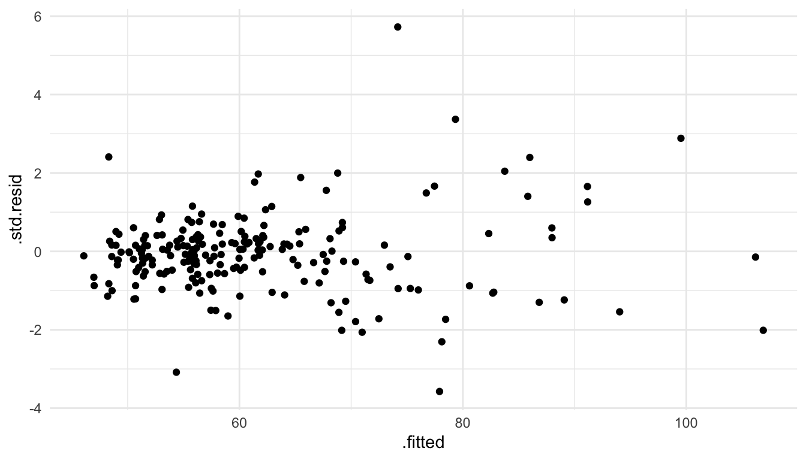
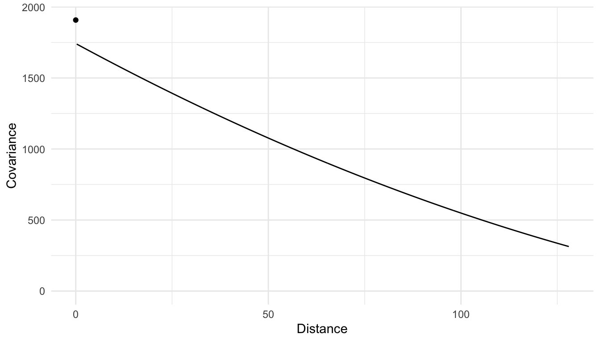
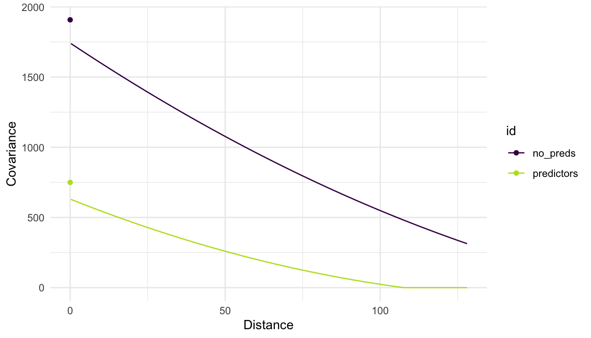
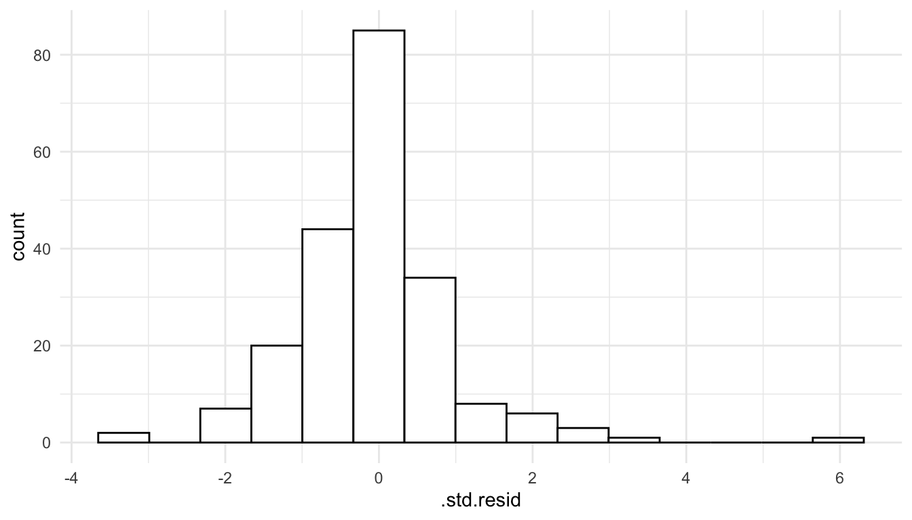
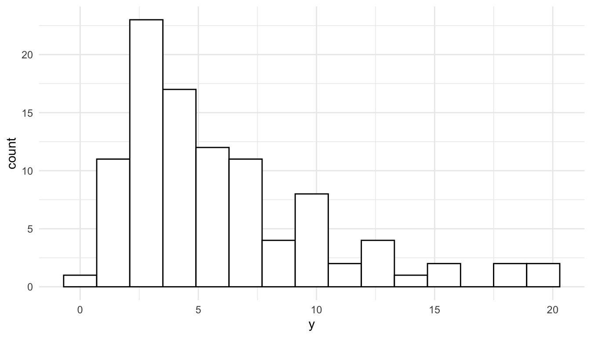
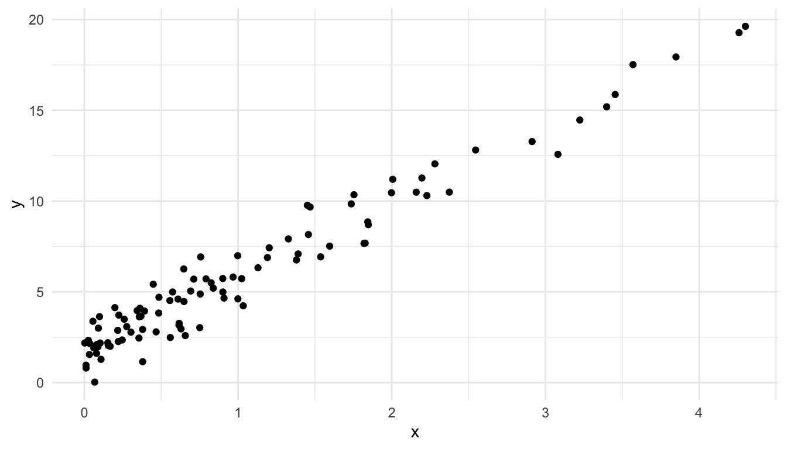
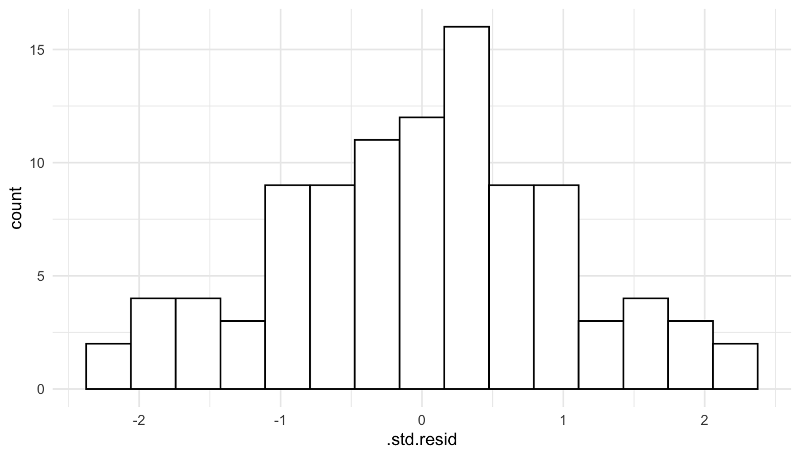
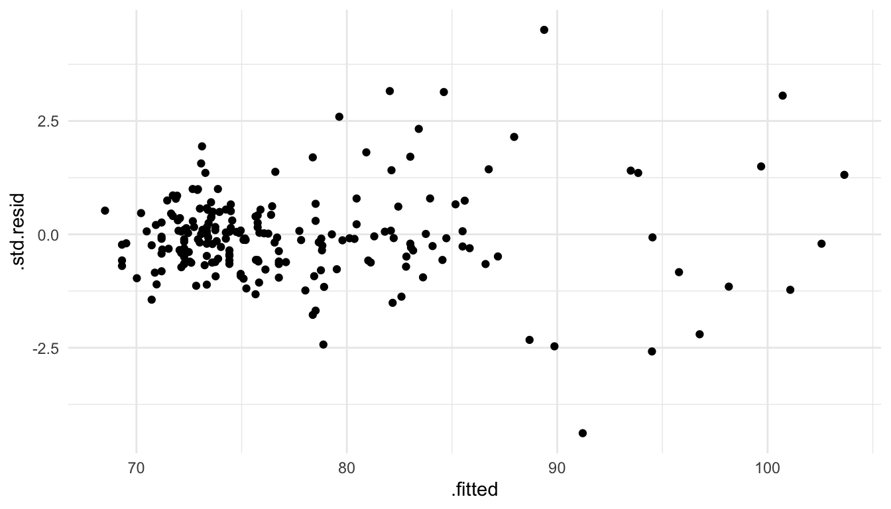
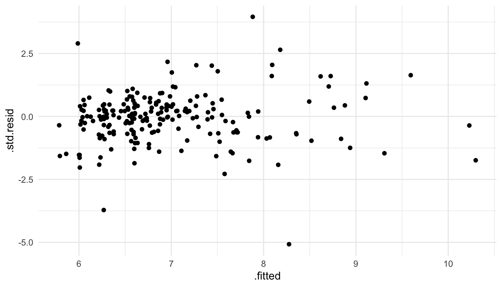

library(spmodel)
library(sf)
library(spData)
library(tidyverse)
library(broom)
theme_set(theme_minimal()) ## set the default theme4 Model Assumptions
Goals
- State and assess the assumptions of a spatial linear model.
- Explain how a spatial linear model can accommodate non-linear trends and skewed response variables.
The goal of this section is to discuss the standard assumptions of the spatial linear model and to assess how reasonable these assumptions seem with plots. Throughout, we will use the spmodel, sf, spData, tidyverse and broom packages:
We will again use the baltimore housing data set from the spData package. Recall that this data set contains information on 211 house prices in the baltimore area in the year 1978. Variables in the data set include:
PRICE, the price of the home, in thousands of dollars.AGE, the age of the house, in years.SQFT, the square footage of the house, in hundreds of square feet.X, the x-coordinate location of the home (with an unknown projection).Y, the y-coordinate location of the home (with an unknown projection).
We again convert the baltimore data frame object to an sf object with:
baltimore_sf <- baltimore |> st_as_sf(coords = c("X","Y"), remove = FALSE)
baltimore_sf
## Simple feature collection with 211 features and 17 fields
## Geometry type: POINT
## Dimension: XY
## Bounding box: xmin: 860 ymin: 505.5 xmax: 987.5 ymax: 581
## CRS: NA
## First 10 features:
## STATION PRICE NROOM DWELL NBATH PATIO FIREPL AC BMENT NSTOR GAR AGE CITCOU
## 1 1 47.0 4 0 1.0 0 0 0 2 3 0 148 0
## 2 2 113.0 7 1 2.5 1 1 1 2 2 2 9 1
## 3 3 165.0 7 1 2.5 1 1 0 3 2 2 23 1
## 4 4 104.3 7 1 2.5 1 1 1 2 2 2 5 1
## 5 5 62.5 7 1 1.5 1 1 0 2 2 0 19 1
## 6 6 70.0 6 1 2.5 1 1 0 3 3 1 20 1
## 7 7 127.5 6 1 2.5 1 1 1 3 1 2 20 1
## 8 8 53.0 8 1 1.5 1 0 0 0 3 0 22 1
## 9 9 64.5 6 1 1.0 1 1 1 3 2 0 22 1
## 10 10 145.0 7 1 2.5 1 1 1 3 2 2 4 1
## LOTSZ SQFT X Y geometry
## 1 5.70 11.25 907 534 POINT (907 534)
## 2 279.51 28.92 922 574 POINT (922 574)
## 3 70.64 30.62 920 581 POINT (920 581)
## 4 174.63 26.12 923 578 POINT (923 578)
## 5 107.80 22.04 918 574 POINT (918 574)
## 6 139.64 39.42 900 577 POINT (900 577)
## 7 250.00 21.88 918 576 POINT (918 576)
## 8 100.00 36.72 907 576 POINT (907 576)
## 9 115.90 25.60 918 562 POINT (918 562)
## 10 365.07 44.12 897 576 POINT (897 576)4.1 Model Assumptions
For spatial linear models, we must make some assumptions about the underlying model generating our data. What are these assumptions, and how can we check these assumptions given our observed sample of data? All of the assumptions are embedded into the spatial linear model formula:
\[ Y_i = \beta_0 + \beta_1 x_{1i} + \beta_2 x_{2i} + \ldots + \beta_p x_{pi} + \epsilon_i + \tau_i, \tag{4.1}\]
where
- \(\epsilon_i\) is normally distributed with mean
0, variance \(\sigma^2_{ie}\), and \(\epsilon_i\) is independent of \(\epsilon_j\) for all \(i \neq j\). - \(\tau_i\) is normally distributed with mean
0, variance \(\sigma^2_{de}\), and can have covariance with \(\tau_j\). The covariance of \(\tau_i\) and \(\tau_j\) can be modeled with a covariance function, like the exponential, gaussian, etc, that depends only on the distance \(h_{ij}\) between observations \(i\) and \(j\).
Here, we will also define \(\delta_i \equiv \epsilon_i + \tau_i\) to encompass the entire random error. Because \(\epsilon_i\) and \(\tau_i\) are independent, the mean of \(\delta_i\) is equal to 0, the variance of \(\delta_i\) is equal to \(\sigma^2 \equiv \sigma_{ie}^2 + \sigma_{de}^2\), and the covariance of \(\delta_i\) with \(\delta_j\) (\(i \neq j\)) with an exponential correlation function is equal to \(\sigma_{de}^2 e^{-h_{ij} / \phi}\), where \(h_{ij}\) is the distance between locations \(i\) and \(j\) and \(\phi\) is the range parameter.
Embedded within this spatial linear model formula are the assumptions of:
Linearity
Stationarity and Isotropy
Normality
We examine each of these assumptions in turn here.
4.1.1 Linearity
First, like in regression models with independent random errors, we still assume that the “mean structure” of the model is linear with respect to the \(\beta\) coefficients. The most common structure for the mean of the response \(Y_i\), which we will denote as \(\mu_i\), is: \(\beta_0 + \beta_1 x_{1i} + \beta_2 x_{2i} + \ldots + \beta_p x_{pi}\).
However, spatial linear models can still easily accommodate non-linear trends as long as the mean structure is linear in the \(\beta\) coefficients. For example,
\(\mu_i = \beta_0 + \beta_1 x_{1i}^2\),
\(\mu_i = \beta_0 + \beta_1 log(x_{1i}) + \beta_2 \sqrt{x_{2i}}\),
\(\mu_i = \beta_1 x_{1i} + \beta_2 x_{2i} + \beta_3 x_{1i} x_{2i}\)
are all linear models in that they are linear in the \(\beta_i\) coefficients. An example of a non-linear mean structure for a model is \(\mu_i = \beta_0 + \beta_1e^{-x_{1i}/\beta_2}\) because this cannot be re-written to be linear in the \(\beta_i\) coefficients. Additive models and splines are other examples of methods that can be used within the spatial linear model framework.
The most common plot to assess whether the linearity assumption is valid for a particular model is to plot the standardized residuals vs. the fitted values and look to make sure there is no strong curvature in the plot. The fitted values are defined as \(\hat{y}_i = \hat{\beta}_0 + \hat{\beta}_1x_{i1} + \hat{\beta}_2x_{i2} + \ldots + \hat{\beta}_p x_{ip}\). While the “non-standardized” residuals are \(e_i = y_i - \hat{y}_i\), the standardized residuals are scaled so that they have a mean of 0 and a variance equal to 1.
As an example, we fit a spatial linear model with the spherical covariance function and with NROOM, NBATH, SQFT, LOTSZ, and AGE as predictors in the model.
mod_lin <- splm(PRICE ~ NROOM + NBATH + SQFT + LOTSZ,
data = baltimore_sf, spcov_type = "spherical")To obtain the standardized residuals and the fitted values for the model, we augment() mod_lin.
mod_lin_aug <- augment(mod_lin)
mod_lin_aug
## Simple feature collection with 211 features and 10 fields
## Geometry type: POINT
## Dimension: XY
## Bounding box: xmin: 860 ymin: 505.5 xmax: 987.5 ymax: 581
## CRS: NA
## # A tibble: 211 × 11
## PRICE NROOM NBATH SQFT LOTSZ .fitted .resid .hat .cooksd .std.resid
## * <dbl> <dbl> <dbl> <dbl> <dbl> <dbl> <dbl> <dbl> <dbl> <dbl>
## 1 47 4 1 11.2 5.7 48.3 -1.31 0.00926 0.0109 2.41
## 2 113 7 2.5 28.9 280. 91.2 21.8 0.0384 0.0127 1.26
## 3 165 7 2.5 30.6 70.6 74.2 90.8 0.0375 0.255 5.72
## 4 104. 7 2.5 26.1 175. 82.3 22.0 0.0156 0.000652 0.454
## 5 62.5 7 1.5 22.0 108. 68.2 -5.70 0.0205 0.00721 -1.31
## 6 70 6 2.5 39.4 140. 78.5 -8.46 0.0476 0.0301 -1.73
## # ℹ 205 more rows
## # ℹ 1 more variable: geometry <POINT>The fitted values are given in a column called .fitted while the standardized residuals are given in a column called .std.resid. Then, we can construct a plot of the standardized residuals vs. fitted values with:
ggplot(data = mod_lin_aug, aes(x = .fitted, y = .std.resid)) +
geom_point()
There is not any major curvature in this plot: therefore, there is no major evidence that the linearity assumption has been violated for this model.
4.1.2 Stationarity
Next, we typically assume a type of stationarity in our model. If the stationarity assumption is valid, then we would expect the variance of \(\delta_i\) to be similar at all values of the predictor variables. That is, we assume that all \(\delta_i\) have the same overall variance: \(\sigma^2 \equiv \sigma_{de}^2 + \sigma_{ie}^2\).
We also assume that the covariance between \(\delta_i\) and \(\delta_j\) is a function of the distance between the locations \(i\) and \(j\) only. We can relax this assumption and assume that the covariance is a function of both distance and direction between the locations \(i\) and \(j\) by fitting an anisotropic model. However, in this section, we only consider isotropic models for which the covariance is only a function of distance.
To assess whether it is reasonable to assume that the random errors all have the same variance \(\sigma^2\), we can again use the plot of the standardized residuals vs. the fitted values.
ggplot(data = mod_lin_aug, aes(x = .fitted, y = .std.resid)) +
geom_point()
From this plot, we see that there is some mild evidence against this assumption. For predicted \(\hat{y}_i\) that are small, there is less overall variability in the standardized residuals. On the other hand, for large fitted values, there is a bit more overall variability in the standardized residuals. However, this is not a drastic pattern: some may look at this plot and say that the assumption of constant variance seems reasonable while others might not be satisfied with that particular assumption.
Assessing whether or not it is reasonable to assume that spatial covariance is based only on distance and that the chosen covariance function is reasonable is a much harder task visually. With larger data sets, we could split the data up into 4 “quadrants” and fit a spatial model separately for each quadrant. If the covariance structure does not change across space, then we would expect to get similar covariance structures in each of the 4 quadrants. But, with many examples, such as this one, we do not have enough data (211 observations here) to perform this check.
Important
Importantly, the assumptions we have are much easier to think about in terms of the random errors, not in terms of the response variable itself.
When we introduced spatial covariance in Chapter 2, we did so in terms of a response variable of interest. However, after we introduce predictor variables into the model, we are now thinking about this covariance as being a structure placed on the random errors in the model. We might wind up with really different fitted covariance functions for a model placed on the response variable (with no predictors) than for a model placed on the random errors with predictors included in the mean structure of the model.
For example, consider again the baltimore housing data set. We can plot the response variable, PRICE and observe that there is substantial spatial correlation in the PRICE variable:
ggplot(data = baltimore_sf, aes(colour = PRICE)) +
geom_sf() +
scale_colour_viridis_c() +
theme_void()
And, a fitted covariance model for PRICE using a spherical covariance function with no predictors in the mean structure of the model is:

We see that there is a large amount of spatial covariance estimated. However, when we introduce predictors into our model, we model the random errors (\(\delta_i\)) with the chosen spatial covariance function. Doing so can drastically change the estimated covariance parameters:

In the plot above, we see that, when modeling PRICE with no predictors, there is more overall variability (a larger covariance when distance is equal to 0) and that, in general, the covariance between PRICE random variables is larger. On the other hand, when we introduce predictors into the model, some of the variability in PRICE is accounted for (or explained) by these predictors. Therefore, we see that the fitted covariance curve is generally lower at all values of distance compared to the curve for the model with no predictors.
4.1.3 Normality
Finally, we also assume that the random errors in the model are normally distributed.
Important
The assumption here is that the errors are normally distributed. Especially if the distribution of one or more of the predictors is very skewed, then it is entirely possible for a histogram of the response to look very skewed but for a histogram of the residuals to look approximately normally distributed.
To assess this assumption, we can construct a histogram of the standardized residuals.
ggplot(data = mod_lin_aug, aes(x = .std.resid)) +
geom_histogram(colour = "black", fill = "white", bins = 15)
We see that the histogram of residuals is approximately symmetric and that there is one fairly extreme outlier with a standardized residual equal to 6.
Note that if we construct a histogram of the response variable, PRICE, we observe some right-skewness.
ggplot(data = baltimore_sf, aes(x = PRICE)) +
geom_histogram(colour = "black", fill = "white", bins = 15)
The reason that we can see skewness in the response variable but not in the residuals is that, for the histogram of the residuals, we are taking into account the effects of the predictors. A simple linear regression example can help illustrate this. In the toy example below, we see that the observed distribution of the toy response variable, \(y\), is clearly right-skewed.
set.seed(5142141)
x <- rexp(100, 1)
y <- 2 + 4 * x + rnorm(100, 0, 1)
toy_df <- tibble(x, y)
ggplot(data = toy_df, aes(x = y)) +
geom_histogram(colour = "black", fill = "white", bins = 15)
The reason for this right-skewness is that there are many small \(x\) values but not very many observed large \(x\) values:
ggplot(data = toy_df, aes(x = x, y = y)) +
geom_point()
After we account for \(x\) in the model, we obtain a symmetric distribution of the standardized model residuals, satisfying the normality assumption even though the observed histogram of \(y\) is right-skewed.
toy_mod <- lm(y ~ x, data = toy_df)
toy_resid <- augment(toy_mod)
ggplot(data = toy_resid, aes(x = .std.resid)) +
geom_histogram(colour = "black", fill = "white", bins = 15)
Again, we only care about normality of the random errors, so as long as the histogram of the residuals is not very skewed, the normality assumption is satisfied.
Normality of the random errors is most important for constructing prediction intervals for the response at unsampled spatial locations. For other types of inference, including hypothesis tests and confidence intervals on the \(\beta\) coefficients and confidence intervals for the mean response at a sampled or unsampled spatial location, mild violations of normality are okay for large sample sizes because of the Central Limit Theorem.
4.1.4 Randomness
In the discussion of assumptions above, a “random selection” of spatial locations is not mentioned. Random selection of spatial locations is not a strict assumption for fitting and interpreting a spatial model. Often, randomly selecting spatial locations to sample in a study area is not feasible anyway, as sampling on private land or on certain terrain may be illegal or impossible.
While randomness is not a strict assumption for a spatial model, how spatial locations are selected can influence the scope of inference. As an extreme example, we would not want to measure pollutant concentration in a sample of lakes in Minnesota and make subsequent inference to all lakes in the United States. As a less extreme example, we would not want to measure pollutant concentration in only the largest lakes in Minnesota and make subsequent inference to all lakes in Minnesota.
4.2 Addressing Violated Assumptions
We now turn our attention to addressing violated assumptions. Most of the strategies discussed here substantially overlap with strategies used to address violated assumptions for linear models with independent random errors.
4.2.1 Adjusting the Mean Structure
Sometimes the assumptions of a linear model are violated because the mean structure of the model is either missing an important predictor or is mis-specified in some other way. To remedy this issue, we can add in the important predictor to the mean structure of the model, or we can transform a predictor that is already in the model (e.g., with the log transformation, square root transformation, etc.).
We have actually already seen this in the toy example given for the normality assumption. With no predictors in the model, we saw that normality was violated. However, after we introduced the predictor \(x\) into the mean structure of the model, the residuals no longer appeared skewed.
As another example, suppose that we fit a spatial linear model to the baltimore housing data set with PRICE as the response and SQFT as the only predictor. Making a plot of the standardized residuals vs. the fitted values, we see that there is a strong violation of the “constant variance” part of the stationarity assumption.
mod_one <- splm(PRICE ~ SQFT,
data = baltimore_sf, spcov_type = "spherical")
mod_one_aug <- augment(mod_one)
mod_one_aug
## Simple feature collection with 211 features and 7 fields
## Geometry type: POINT
## Dimension: XY
## Bounding box: xmin: 860 ymin: 505.5 xmax: 987.5 ymax: 581
## CRS: NA
## # A tibble: 211 × 8
## PRICE SQFT .fitted .resid .hat .cooksd .std.resid
## * <dbl> <dbl> <dbl> <dbl> <dbl> <dbl> <dbl>
## 1 47 11.2 73.1 -26.1 0.00692 0.0131 1.94
## 2 113 28.9 88.0 25.0 0.00898 0.0209 2.15
## 3 165 30.6 89.4 75.6 0.0141 0.146 4.51
## 4 104. 26.1 85.6 18.7 0.00742 0.00206 0.743
## 5 62.5 22.0 82.2 -19.7 0.00407 0.00465 -1.51
## 6 70 39.4 96.8 -26.8 0.0214 0.0531 -2.20
## # ℹ 205 more rows
## # ℹ 1 more variable: geometry <POINT>
ggplot(data = mod_one_aug, aes(x = .fitted, y = .std.resid)) +
geom_point()
Adding back in the other predictors (NROOM, NBATH, LOTSZ) and fitting the model with all four of these predictors gives a plot that shows a more mild violation of the constant variance assumption:
ggplot(data = mod_lin_aug, aes(x = .fitted, y = .std.resid)) +
geom_point()4.2.2 Transforming the Response
In the previous example, adding in the other predictors to the mean structure of the model helps the constant variance assumption. But, the plot of the standardized residuals vs. the fitted values still shows a mild departure from this assumption. If we think that this is cause for concern, we can transform the response variable. From such a transformation, we typically gain confidence in the model assumptions on the transformed response compared to the untransformed response. However, we typically lose interpretability of the model, as interpreting the estimated \(\hat{\beta}_j\) coefficients with a transformed response is much more challenging.
As an example, we can use the square root function to transform the PRICE variable in the spatial linear model with all 4 predictors.
mod_trans <- splm(sqrt(PRICE) ~ NROOM + NBATH + SQFT + LOTSZ,
data = baltimore_sf, spcov_type = "spherical")
mod_trans_aug <- augment(mod_trans)
ggplot(data = mod_trans_aug, aes(x = .fitted, y = .std.resid)) +
geom_point()
We see that the constant variance part of the stationarity assumption is more reasonable when modeling the square root of PRICE instead of PRICE directly.
4.2.3 Adjusting the Error Structure
The strategies above (adjusting the mean structure and transforming the response) are applied to remedying model assumptions in many contexts outside of spatial statistics. We can also consider modifying the structure for the random errors in the model.
The most common method of adjusting the error structure in spatial models is to change the correlation function used. Thus far, we have only mentioned the exponential, spherical, gaussian, and triangular correlation functions (all of which use 3 parameters), but, there are many others. One of the more popular functions that we have not mentioned is the Matern correlation function, which uses 4 parameters: the partial sill, nugget, range, and an “extra” parameter that controls the “smoothness” of the correlation function.
Changing the correlation function used to model the random errors may help with the stationarity assumption and the normality assumption of these errors. So, which correlation function is “correct” to use in a particular situation? That question can be quite challenging to answer. For many data sets, many of the commonly used spatial covariance functions will yield similar inferences on the fixed effect (\(\beta_j\)) coefficients.
Perhaps the most common method to choose a spatial covariance function is to use a model selection criterion like the AIC. For example, in the code below, we fit models with the exponential, gaussian, spherical, matern, and none covariance structures.
many_mods <- splm(PRICE ~ NROOM + NBATH + SQFT + LOTSZ,
data = baltimore_sf,
spcov_type = c("exponential", "gaussian", "spherical",
"matern", "none"))
glances(many_mods)
## # A tibble: 5 × 11
## model n p npar value AIC AICc BIC logLik deviance
## <chr> <int> <dbl> <int> <dbl> <dbl> <dbl> <dbl> <dbl> <dbl>
## 1 spherical 211 5 3 1715. 1721. 1721. 1731. -857. 206.
## 2 exponential 211 5 3 1715. 1721. 1721. 1731. -857. 206.
## 3 gaussian 211 5 3 1722. 1728. 1729. 1739. -861. 206.
## 4 matern 211 5 4 1721. 1729. 1729. 1742. -860. 206.
## 5 none 211 5 1 1794. 1796. 1796. 1799. -897. 206
## # ℹ 1 more variable: pseudo.r.squared <dbl>We observe something common in spatial analysis here: choosing to use a spatial covariance function in the first place is much more important than which particular covariance function is chosen. In other words, we see that the model with none covariance has a much higher AIC than the other models: this model clearly provides the worst fit to the data of the 5 chocies. Then, while the spherical and exponential slightly outperform the gaussian and matern for this example, all four remaining models have similar AIC values. Additionally, if we examine the model summary output for some of the models with
many_mods[[3]] |> tidy() ## spherical
## # A tibble: 5 × 5
## term estimate std.error statistic p.value
## <chr> <dbl> <dbl> <dbl> <dbl>
## 1 (Intercept) 30.0 14.3 2.09 0.0363
## 2 NROOM 2.15 1.09 1.97 0.0489
## 3 NBATH 8.27 1.86 4.44 0.00000880
## 4 SQFT 0.0870 0.171 0.508 0.612
## 5 LOTSZ 0.0821 0.0158 5.18 0.000000221
many_mods[[4]] |> tidy() ## matern
## # A tibble: 5 × 5
## term estimate std.error statistic p.value
## <chr> <dbl> <dbl> <dbl> <dbl>
## 1 (Intercept) 19.1 7.30 2.61 0.00894
## 2 NROOM 2.12 1.11 1.92 0.0554
## 3 NBATH 8.39 1.89 4.44 0.00000904
## 4 SQFT 0.0969 0.172 0.562 0.574
## 5 LOTSZ 0.0843 0.0159 5.29 0.000000119we see that the estimated coefficients and p-values for inference are quite similar in all of the models with a spatial covariance function.
Other modifications that we can make to the error structure of the model include:
- adding
anisotropyso that covariance depends on both direction and distance. - adding non-spatial random effects with
randomto accommodate for things like repeated measurements at the same spatial location. - adding in a partition factor with
partition_factorto force observations in different levels of the partition factor to be uncorrelated, no matter how far apart they are in space.
While all of these are possible to fit with spmodel (via the anisotropy, random, and partition_factor arguments to splm()), we do not explore these further in these materials. Instead, https://usepa.github.io/spmodel/articles/guide.html gives some examples on how to incorporate these more advanced modeling features into a spatial model.